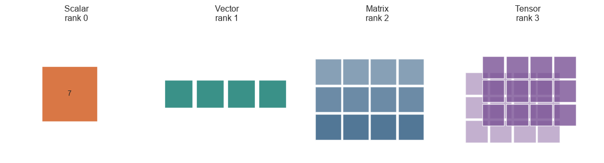
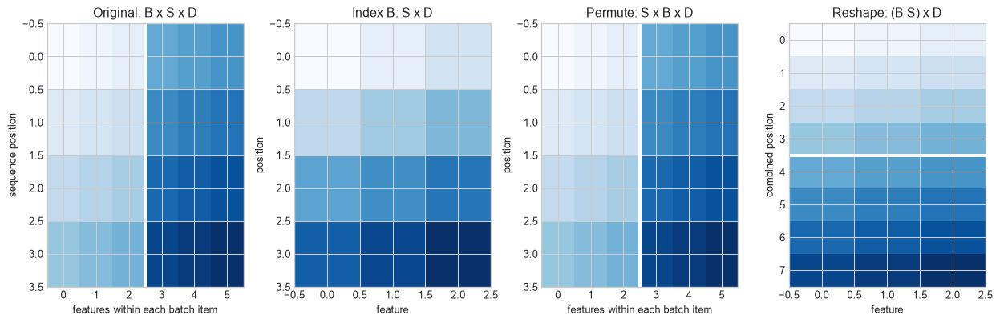
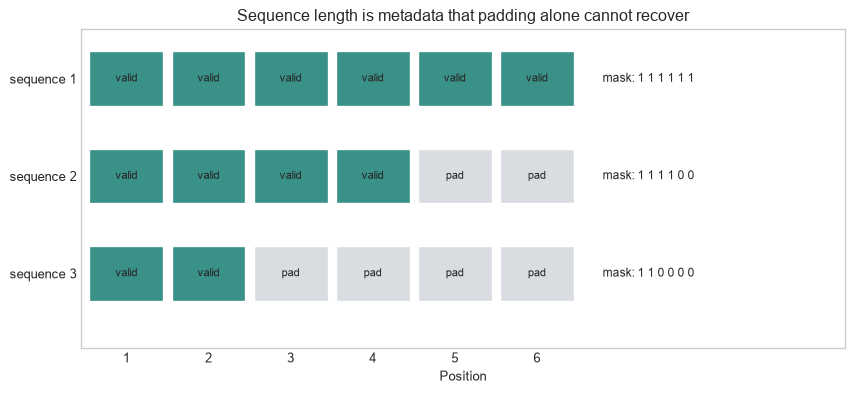

Giving numerical arrays a computational and semantic structure
The problem
Start with a small batch: two sequences, four positions in each sequence, and three measured values at every position. A program can store those 24 numbers in an array of shape \(2\times4\times3\). It cannot infer from that shape whether its first axis identifies documents, households, or images; whether its second axis is time, token position, or a spatial location; or what the final three values describe.
The models, gradients, updates, and systems in Parts I and II all operate on arrays of this kind. This chapter begins Part III by making their contracts explicit before the book turns to embeddings and sequences. It separates rank from vector dimension, attaches a meaning to each axis, and follows how transformations preserve or discard distinctions. An array can have a valid shape while carrying the wrong meaning for the operation applied to it.
A tensor with named axes
The running example uses the batch just described. Its shape is \(2\times4\times3\), written more generally as \(B\times S\times D\) for batch, sequence position, and feature dimension.
The first diagram only counts axes. It does not establish the meaning of any axis, which is why the next examples name them. Keep that distinction in view throughout the chapter: shape provides a computational interface; the representation contract tells the operation what the stored positions stand for.
Code
import numpy as npimport matplotlib.pyplot as pltfrom matplotlib.patches import Rectangle, FancyArrowPatchplt.style.use("seaborn-v0_8-whitegrid")blue, teal, orange, purple, grey ="#24527a", "#3a9188", "#d97745", "#7a5195", "#5f6b76"fig,axes=plt.subplots(1,4,figsize=(12,3.3))titles=["Scalar\nrank 0","Vector\nrank 1","Matrix\nrank 2","Tensor\nrank 3"]for ax,title inzip(axes,titles): ax.set_title(title); ax.axis("off"); ax.set_aspect("equal")axes[0].add_patch(Rectangle((.4,.4),.6,.6,facecolor=orange,edgecolor="white")); axes[0].text(.7,.7,"7",ha="center",va="center")for j inrange(4): axes[1].add_patch(Rectangle((.1+j*.34,.55),.3,.3,facecolor=teal,edgecolor="white"))for i inrange(3):for j inrange(4): axes[2].add_patch(Rectangle((.1+j*.3,.2+(2-i)*.3),.28,.28,facecolor=blue,alpha=.55+.12*i,edgecolor="white"))for offset,alpha in [(0,.45),(.18,.8)]:for i inrange(3):for j inrange(4): axes[3].add_patch(Rectangle((.1+j*.26+offset,.17+(2-i)*.26+offset),.24,.24,facecolor=purple,alpha=alpha,edgecolor="white"))for ax in axes: ax.set_xlim(0,1.55); ax.set_ylim(0,1.45)plt.tight_layout(); plt.show()

Figure 17.1: Scalar, vector, matrix, and rank-three tensor describe different numbers of axes; axis meaning requires additional labels.
Rank counts axes, not the number of stored values and not the dimension of every vector contained in the array. A matrix with shape \(10{,}000\times768\) has rank two, while each of its 10,000 rows can be a 768-dimensional vector. Keeping these meanings separate prevents a common source of confusion.
Representation. A vector or tensor whose coordinates are used by a model to carry information about an input. Its shape states a computational interface; its usefulness depends on the distinctions it preserves for a stated task.
Level 1 - Intuition
A tensor is an array with a shape
A scalar contains one numerical value. A vector arranges values along one axis. A matrix uses two axes. In machine-learning software, tensor is the general name for an array with any number of axes, including these simpler cases. The term names the container; it does not tell the reader what the entries represent.
The shape states how many positions exist along each axis. A tensor with shape (2, 4, 3) contains \(2\times4\times3=24\) values. Shape does not say whether the first axis contains patients, images, documents, or independent simulation runs. It also does not say whether the final three values are colour channels, sensor measurements, or coordinates learned by a network.
Axis labels supply the missing meaning
The running tensor assigns the following roles:
axis 0 selects one sequence in the batch;
axis 1 selects a position within that sequence;
axis 2 selects a feature at that position.
The same rectangular array can support a different interpretation if its axes are relabelled. The calculation may still execute while answering a different question.
Figure 17.2: Identical values support different interpretations when rows and columns are assigned different meanings.
In the tabular interpretation, averaging down a column estimates a feature mean across observations. In the sequence interpretation, the same operation averages a channel across positions. Neither result is intrinsically wrong. The axis contract determines which result is relevant.
A representation links an object to numbers
A representation is the numerical description made available to a model at a particular stage. A tabular row represents an observation through selected variables. An image tensor represents sampled intensities on a spatial grid. A hidden layer represents its input through values produced by earlier parameters and activations.
Figure 17.3: A model receives an encoded input and produces successive numerical representations whose meanings follow from the transformations that created them.
The representation changes even when the source object does not. A six-value hidden vector is not a compressed copy whose coordinates have self-evident names. Its meaning depends on the fitted transformations and on how later layers use it. Chapter 17 will examine learned embeddings in detail; this chapter establishes the tensor operations and interpretive discipline required to discuss them.
Shape errors and meaning errors differ
A shape error stops an incompatible operation, such as multiplying matrices whose inner dimensions do not match. A meaning error can preserve every expected shape. Swapping batch and sequence axes in a tensor of shape \(32\times32\times768\) changes no tuple of sizes, yet it changes which positions a later operation combines. Assertions about named axes and small perturbation tests are therefore needed alongside shape checks.
The next operations can preserve every stored number while changing which entries are treated as neighbours, features, positions, or observations. Level 2 follows indexing, permutation, reshaping, broadcasting, reduction, and masking as changes to an explicit axis contract.
Level 2 - Mechanics
Indexing selects positions along named axes
Let H have shape (B, S, D). Then H[1, 2, 0] selects one number: feature 0 at position 2 of sequence 1. H[1, 2, :] selects the complete feature vector at that position. H[1, :, :] selects one sequence, and H[:, 2, :] selects the third position from every sequence.
H shape: (2, 4, 3)
one scalar: 18
one position vector: [18 19 20] (3,)
one sequence: (4, 3)
one position, batch: (2, 3)
The output confirms that each integer index removes one axis, while each full slice preserves it. Some APIs can retain a length-one axis, for example H[1:2, 2:3, :]. That distinction affects later broadcasting even though both selections contain the same three feature values.
Permutation changes axis order. Converting (B, S, D) to (S, B, D) moves the sequence axis before the batch axis. Reshaping (B, S, D) to (B*S, D) combines batch and sequence positions into one axis. Neither operation changes the numbers, but each changes how later code locates them.
A reshape is safe only when the grouped axes have the intended adjacency and ordering. Reshaping after a permutation without checking memory order can either fail, copy data, or silently produce an ordering different from the conceptual grouping.
Code
display=H.astype(float)fig,axes=plt.subplots(1,4,figsize=(13,4.3))axes[0].imshow(np.concatenate([display[0],display[1]],axis=1),cmap="Blues",aspect="auto")axes[0].axvline(2.5,color="white",linewidth=3); axes[0].set_title("Original: B x S x D"); axes[0].set_xlabel("features within each batch item"); axes[0].set_ylabel("sequence position")axes[1].imshow(display[1],cmap="Blues",aspect="auto"); axes[1].set_title("Index B: S x D"); axes[1].set_xlabel("feature"); axes[1].set_ylabel("position")permuted=np.transpose(display,(1,0,2))axes[2].imshow(permuted.reshape(S,B*D),cmap="Blues",aspect="auto"); axes[2].axvline(2.5,color="white",linewidth=3); axes[2].set_title("Permute: S x B x D"); axes[2].set_xlabel("features within each batch item"); axes[2].set_ylabel("position")axes[3].imshow(display.reshape(B*S,D),cmap="Blues",aspect="auto"); axes[3].axhline(3.5,color="white",linewidth=3); axes[3].set_title("Reshape: (B S) x D"); axes[3].set_xlabel("feature"); axes[3].set_ylabel("combined position")plt.tight_layout(); plt.show()

Figure 17.4: Indexing, permutation, and reshaping preserve different parts of a tensor’s axis structure.
The flattened representation is useful when the same feature transformation should be applied independently to every position. It is unsuitable if the next operation needs to know which positions belong to the same sequence and that information has not been retained elsewhere.
Broadcasting aligns compatible axes
Broadcasting applies an operation between arrays of different shapes by treating selected length-one or absent axes as repeated. Adding a bias vector of shape (D,) to H adds the same feature-specific bias at every batch item and sequence position. Adding a position offset of shape (S, 1) changes every feature at a position by the same amount.
Code
feature_bias=np.array([100,200,300]) # (D,)position_offset=np.arange(S).reshape(S,1)*10# (S,1)print("feature-biased shape:", (H+feature_bias).shape)print("position offsets:\n",position_offset)print("first sequence after both operations:\n",H[0]+feature_bias+position_offset)
feature-biased shape: (2, 4, 3)
position offsets:
[[ 0]
[10]
[20]
[30]]
first sequence after both operations:
[[100 201 302]
[113 214 315]
[126 227 328]
[139 240 341]]
Broadcasting is parameter sharing expressed through shape alignment. It can also conceal a mistake. If batch size happens to equal sequence length, an array intended for one axis may align with the other. Explicitly inserting singleton dimensions and naming intermediate shapes makes the intended repetition visible.
Reductions remove or retain selected axes
Summing H over the sequence axis produces shape (B, D): one feature vector per sequence. Averaging over the batch axis produces shape (S, D): one position-by-feature summary across sequences. keepdims=True retains a length-one axis so the result can be broadcast back against the original tensor.
The reduction axis defines the dependency. Chapter 12 used this fact to distinguish normalisation methods. The same rule applies to pooling, losses, metrics, and attention-weighted sums.
Variable-length sequences require masks
A rectangular batch requires a common sequence length. Shorter sequences are often extended with padding values. A mask records which positions contain data. Padding is storage, not evidence, and must be excluded from operations whose result should depend only on valid positions.
Code
lengths=np.array([6,4,2]); max_length=6mask=np.arange(max_length)[None,:] < lengths[:,None]fig,ax=plt.subplots(figsize=(9,4.2))for b inrange(3):for s inrange(max_length): colour=teal if mask[b,s] else"#d9dde1" ax.add_patch(Rectangle((s,b*1.1),.9,.62,facecolor=colour,edgecolor="white")) ax.text(s+.45,b*1.1+.31,"valid"if mask[b,s] else"pad",ha="center",va="center",fontsize=8) ax.text(6.25,b*1.1+.31,"mask: "+" ".join(mask[b].astype(int).astype(str)),va="center",fontsize=9)ax.set_yticks([.31,1.41,2.51],["sequence 1","sequence 2","sequence 3"]); ax.set_xticks(np.arange(6)+.45,np.arange(1,7)); ax.set_xlabel("Position")ax.set_xlim(-.1,9.2); ax.set_ylim(3.35,-.25); ax.set_title("Sequence length is metadata that padding alone cannot recover"); ax.grid(False)plt.tight_layout(); plt.show()

Figure 17.5: Padding creates a rectangular tensor, while a mask preserves the boundary between valid positions and storage added for batching.
If the padding value is zero, an unmasked mean divides by too many positions and shrinks shorter sequences. If zero is also a legitimate value, the tensor cannot reveal which zeros are padding. The mask or lengths must travel with the representation.
The axis contract can now be stated as index ranges and tested in code. Level 3 distinguishes invertible coordinate changes from transformations that discard distinctions, then checks the implemented shape and layout.
The indices \(b\) and \(s\) remain in the output. The input-feature index \(k\) is summed out, and the output-feature index \(d\) is introduced by the rows of \(W\). The equation therefore states both the numerical calculation and the axis transformation.
Code
rng=np.random.default_rng(16)B,S,D_in,D_out=2,4,3,5H_num=rng.normal(size=(B,S,D_in))W=rng.normal(size=(D_out,D_in)); bias=rng.normal(size=D_out)Z_matmul=H_num@W.T+biasZ_einsum=np.einsum("bsk,dk->bsd",H_num,W)+biasZ_loop=np.empty((B,S,D_out))for b_index inrange(B):for s_index inrange(S):for d_index inrange(D_out): Z_loop[b_index,s_index,d_index]=sum( H_num[b_index,s_index,k]*W[d_index,k] for k inrange(D_in) )+bias[d_index]print("output shape:",Z_matmul.shape)print("three implementations agree:",np.allclose(Z_matmul,Z_einsum) and np.allclose(Z_matmul,Z_loop))
output shape: (2, 4, 5)
three implementations agree: True
The loop exposes every index in the equation. einsum states the same contraction compactly. Matrix multiplication relies on the convention that the final input axis contracts with the appropriate weight axis. Agreement among the three forms tests the implementation more strongly than checking the output shape alone.
A change of coordinates need not lose information
Let a representation vector be \(h\in\mathbb{R}^{D}\) and let \(A\in\mathbb{R}^{D\times D}\) be invertible. The transformed coordinates are
\[
h'=Ah.
\]
Every \(h\) can be recovered as \(A^{-1}h'\), so the transformation preserves information. A downstream linear score \(y=w^\top h\) can be preserved by changing its weights to
\[
w'=A^{-\top}w,
\]
because \({w'}^\top h'=w^\top A^{-1}Ah=w^\top h\). Individual coordinates can therefore change substantially while the complete model function remains unchanged.
Figure 17.6: An invertible change of basis alters coordinates, distances along plotted axes, and apparent directions while preserving the represented points and a compatible linear score.
This equivalence limits coordinate-by-coordinate interpretation. A hidden coordinate can appear important in one basis and be spread across several coordinates in another. Interpretations are stronger when they concern a stable subspace, a tested intervention, or a property that remains under the relevant class of transformations.
If a matrix \(P\in\mathbb{R}^{K\times D}\) has \(K<D\), then \(h'=Ph\) usually cannot preserve every distinction in \(h\). Any vector in the null space of \(P\) is removed: if \(Pv=0\), then \(P(h+v)=Ph\). Pooling, clipping, quantisation, and dimensionality reduction can all create such collisions.
Information loss is not necessarily an error. A representation designed for a task may deliberately remove nuisance variation. The claim must specify which distinctions should be retained and which may be discarded.
PyTorch separates logical shape from physical layout
Code
import torchtensor=torch.arange(24).reshape(2,4,3)sequence_first=tensor.permute(1,0,2)print("original shape and stride: ",tuple(tensor.shape),tensor.stride())print("permuted shape and stride: ",tuple(sequence_first.shape),sequence_first.stride())print("permuted tensor is contiguous: ",sequence_first.is_contiguous())restored=sequence_first.contiguous().view(4,6)print("materialised and reshaped: ",tuple(restored.shape),restored.stride())
original shape and stride: (2, 4, 3) (12, 3, 1)
permuted shape and stride: (4, 2, 3) (3, 12, 1)
permuted tensor is contiguous: False
materialised and reshaped: (4, 6) (6, 1)
A permutation can return a view that changes how indices map to the same underlying storage. Its logical shape is valid, but adjacent logical values may not be adjacent in memory. contiguous() materialises values in the new order before view regroups them. reshape may perform this copy automatically, which is convenient but can conceal a memory cost.
Level 3 has shown that tensor equations specify index dependencies and that representation coordinates are not unique. Level 4 examines what makes a representation useful, transferable, and operationally sound.
Level 4 - Research & Systems
Representation quality is conditional on a task
Representation learning aims to make relevant structure easier for later computations to use. Bengio, Courville, and Vincent (2013) review how representations can expose or entangle factors of variation and why learned features became central to deep learning. The formulation does not provide one task-independent score of representation quality.
A representation can support one target and suppress another. Removing speaker identity may help a speech recogniser generalise across speakers but prevent a speaker-identification task. Compressing an image to one class score may preserve the current classification decision while discarding location, texture, and alternative labels. Evaluation should therefore name the downstream task, data distribution, readout capacity, and amount of labelled data.
Linear probing is one common test: freeze a representation and fit a linear predictor for a target. Strong probe performance shows that the target is linearly accessible under that protocol. It does not show that one coordinate corresponds to the concept, that the model uses the information causally, or that the representation will transfer under distribution shift.
Invariance and equivariance specify desired responses to transformations
A representation \(f\) is invariant to a transformation \(g\) when
\[
f(gx)=f(x).
\]
It is equivariant when the input transformation produces a corresponding transformation \(\rho(g)\) in representation space:
\[
f(gx)=\rho(g)f(x).
\]
For classification, invariance to a small translation may be useful when the label should not change. For localisation, removing position would destroy the target; an equivariant representation that moves with the object is more appropriate. Group-equivariant convolutional networks encode specified symmetries through structured weight sharing (Cohen and Welling 2016). The benefit depends on whether the assumed transformation preserves the relevant structure.
Figure 17.7: Invariance keeps a representation unchanged, while equivariance transforms it in a predictable way when the input moves.
The maximum is unchanged after translation and is therefore invariant in this constructed example. The full feature map shifts and is equivariant. The invariant summary has also discarded location. Whether that loss is useful depends on the task.
Transfer reveals both generality and specificity
Hidden representations fitted on one task are often reused for another. Yosinski et al. (2014) experimentally found that transferability varies by layer and decreases as source and target tasks become less similar. The result argues against treating a pretrained representation as a neutral description of the world. It reflects the source data, objective, architecture, and layer from which it was taken.
A transfer evaluation should compare against relevant baselines, specify which layers are frozen or fine-tuned, and separate the benefit of representation quality from differences in model size or pretraining compute. High performance on one benchmark does not establish that the representation retains information needed by another population, language, modality, or target.
Shape, dtype, device, and layout form a systems contract
At runtime, a tensor carries more than values and shape. Its dtype determines range and precision. Its device determines where operations execute. Its strides determine how logical indices map to storage. Its gradient status determines whether automatic differentiation records operations. Sparse, quantised, and sharded tensors add further metadata and constraints.
Layout affects kernel choice and memory traffic. A transpose may be nearly free as a view but make a later operation slower or force a contiguous copy. Padding dimensions to hardware-friendly multiples can improve throughput while increasing stored elements. Distributed layouts split axes across devices; a local shape then describes only one shard, and an operation that needs a complete axis requires communication.
Names such as hidden_states do not verify this contract. Interfaces should state named axes, dtype, device, valid ranges, masks, layout assumptions, and whether gradients are required. Boundary assertions should be supplemented with semantic tests: permute batch order and check that outputs permute accordingly; alter one padded position and check that masked outputs remain unchanged; compare vectorised and loop implementations on a small tensor.
Representation analysis requires interventions and controls
Visualising two principal components can reveal clusters in one projection, but the projection omits directions and can change under preprocessing. Nearest neighbours depend on the distance measure, normalisation, and candidate set. A probe can exploit correlations that the original model does not use. Coordinate labels can change under an invertible basis transformation without changing model behaviour.
Stronger analysis combines descriptive evidence with interventions. Remove or alter a suspected feature, project it out, replace a representation with a controlled value, or patch a representation from another input, then measure the downstream change. These tests still require controls because an intervention may move the tensor outside the distribution on which later layers were trained.
A representation audit records provenance and operations
An audit should record:
the source object and encoding procedure;
the tensor’s named axes, shape, dtype, device, layout, and valid ranges;
padding, masks, missing values, and variable-length metadata;
every reshape, permutation, broadcast, reduction, and cross-device partition at an interface;
the layer, model checkpoint, data distribution, and objective that produced a learned representation;
the probe, distance, projection, or intervention used to analyse it;
the task and transformations under which information should be retained, removed, invariant, or equivariant.
The audit separates three claims that are often conflated: the tensor is structurally valid, the representation retains information about a target, and the fitted model actually uses that information. Each requires different evidence.
Common misconceptions
Tensor rank is the same as matrix rank. Tensor rank counts axes in common software usage; matrix rank measures linear independence.
A 768-dimensional representation has rank 768. One vector has one axis and 768 coordinates.
Shape identifies meaning. Several axis contracts can share the same tuple of sizes.
A successful reshape preserves semantics. It preserves element count, not necessarily the intended grouping or order.
Transpose always copies data. It can return a view with changed strides, although later operations may require a copy.
Broadcasting creates separately fitted values. It reuses values along compatible axes.
Padding zeros are harmless. Unmasked reductions and interactions can depend on them.
A hidden coordinate has an intrinsic interpretation. Invertible basis changes can redistribute information across coordinates.
Compression necessarily damages the target task. It may remove variation irrelevant to that target, but this must be tested.
A representation that contains information causes the model’s decision. Decodability and causal use are different claims.
Invariance is always desirable. It is harmful when the transformed property is needed for the target.
Two tensors with equal values have the same operational behaviour. Dtype, device, strides, masks, and gradient status can differ.
A two-dimensional projection shows the complete geometry. It omits directions and depends on the projection procedure.
A pretrained representation is task-neutral. It reflects its training data, objective, architecture, and checkpoint.
Exercises
Give the rank, shape, and number of elements of a tensor with shape (32, 128, 768).
Explain why a row of that tensor can be a 768-dimensional vector although the tensor has rank three.
For axes (batch, position, feature), state the meaning and shape of H[2, :, :], H[:, 2, :], and H[:, :, 2].
Rewrite a tensor from (batch, position, feature) to (position, batch, feature) in NumPy and PyTorch.
Explain why reshaping (B, S, D) to (B*S, D) can lose sequence membership even though no value is deleted.
Construct a broadcasting error that remains hidden when B=S and fails when B changes.
Calculate the shapes produced by reducing a (4, 10, 16) tensor over each axis separately.
Compute masked means for sequences of lengths 5, 3, and 1 stored in a length-5 batch.
Explain why zero padding cannot identify valid positions when zero is also a valid feature value.
Write the index equation for a transformation from (B, S, 64) to (B, S, 128).
Implement that transformation with a loop, matrix multiplication, and einsum, then compare the values.
Verify numerically that \(w'=A^{-\top}w\) preserves a linear score after the coordinate change \(h'=Ah\).
Give two different vectors that collide under the projection \(P=[1\;1]\).
Identify a task for which translation invariance is useful and one for which it removes required information.
Design a perturbation test that detects whether a model accidentally uses padding positions.
Compare the strides of a contiguous tensor and two different permutations in PyTorch.
Explain why a linear probe establishes accessibility but not causal use.
Design an intervention that tests whether a hidden representation uses one suspected feature.
Specify the tensor contract for a Transformer hidden-state interface with variable sequence lengths.
Design a representation audit for transferring a pretrained image or language model to a new domain.
Summary
Vectors, matrices, and higher-order tensors organise numerical values along axes. Rank counts axes; shape records their sizes; an axis contract supplies their meaning. Indexing, permutation, reshaping, broadcasting, and reduction alter different parts of that structure. Operations can preserve valid shapes while violating the intended semantics.
A representation is the numerical description available to a model at a particular stage. Its individual coordinates are not unique: invertible changes of basis can preserve information and complete model behaviour while changing every coordinate. Non-invertible transformations deliberately or accidentally remove distinctions.
Representation quality depends on the task and distribution. Invariance removes sensitivity to a transformation, while equivariance preserves a predictable response. Probes, projections, and visualisations provide partial evidence; interventions are needed to test use. At system boundaries, shape, named axes, dtype, device, strides, masks, provenance, and partitioning form one operational contract.
Looking ahead
Chapter 17 examines embeddings. This chapter established how numerical coordinates, axis contracts, and transformations form representations; the next chapter asks how discrete items acquire learned vectors, what their geometry supports, and which conclusions cannot be drawn from similarity alone.
Further reading
The linear-algebra and representation-learning foundations are presented by Goodfellow, Bengio, and Courville (2016). Bengio, Courville, and Vincent (2013) review representation learning and the problem of making explanatory factors accessible to later models. Transfer across layers and tasks is examined by Yosinski et al. (2014). Equivariance encoded through structured transformations is developed by Cohen and Welling (2016).
Bengio, Yoshua, Aaron Courville, and Pascal Vincent. 2013. “Representation Learning: A Review and New Perspectives.”IEEE Transactions on Pattern Analysis and Machine Intelligence 35 (8): 1798–828. https://doi.org/10.1109/TPAMI.2013.50.
Cohen, Taco S., and Max Welling. 2016. “Group Equivariant Convolutional Networks.” In Proceedings of the 33rd International Conference on Machine Learning, 48:2990–99. Proceedings of Machine Learning Research. https://proceedings.mlr.press/v48/cohenc16.html.
---title: "Vectors, Tensors, and Representations"subtitle: "Giving numerical arrays a computational and semantic structure"---## The problemStart with a small batch: two sequences, four positions in each sequence, and three measured values at every position. A program can store those 24 numbers in an array of shape $2\times4\times3$. It cannot infer from that shape whether its first axis identifies documents, households, or images; whether its second axis is time, token position, or a spatial location; or what the final three values describe.The models, gradients, updates, and systems in Parts I and II all operate on arrays of this kind. This chapter begins Part III by making their contracts explicit before the book turns to embeddings and sequences. It separates rank from vector dimension, attaches a meaning to each axis, and follows how transformations preserve or discard distinctions. An array can have a valid shape while carrying the wrong meaning for the operation applied to it.### A tensor with named axesThe running example uses the batch just described. Its shape is $2\times4\times3$, written more generally as $B\times S\times D$ for batch, sequence position, and feature dimension.The first diagram only counts axes. It does not establish the meaning of any axis, which is why the next examples name them. Keep that distinction in view throughout the chapter: shape provides a computational interface; the representation contract tells the operation what the stored positions stand for.```{python}#| label: fig-tensor-ranks#| fig-cap: "Scalar, vector, matrix, and rank-three tensor describe different numbers of axes; axis meaning requires additional labels."#| fig-alt: "Four panels show a scalar as one cell, a vector as one row, a matrix as a grid, and a rank-three tensor as two stacked grids."import numpy as npimport matplotlib.pyplot as pltfrom matplotlib.patches import Rectangle, FancyArrowPatchplt.style.use("seaborn-v0_8-whitegrid")blue, teal, orange, purple, grey ="#24527a", "#3a9188", "#d97745", "#7a5195", "#5f6b76"fig,axes=plt.subplots(1,4,figsize=(12,3.3))titles=["Scalar\nrank 0","Vector\nrank 1","Matrix\nrank 2","Tensor\nrank 3"]for ax,title inzip(axes,titles): ax.set_title(title); ax.axis("off"); ax.set_aspect("equal")axes[0].add_patch(Rectangle((.4,.4),.6,.6,facecolor=orange,edgecolor="white")); axes[0].text(.7,.7,"7",ha="center",va="center")for j inrange(4): axes[1].add_patch(Rectangle((.1+j*.34,.55),.3,.3,facecolor=teal,edgecolor="white"))for i inrange(3):for j inrange(4): axes[2].add_patch(Rectangle((.1+j*.3,.2+(2-i)*.3),.28,.28,facecolor=blue,alpha=.55+.12*i,edgecolor="white"))for offset,alpha in [(0,.45),(.18,.8)]:for i inrange(3):for j inrange(4): axes[3].add_patch(Rectangle((.1+j*.26+offset,.17+(2-i)*.26+offset),.24,.24,facecolor=purple,alpha=alpha,edgecolor="white"))for ax in axes: ax.set_xlim(0,1.55); ax.set_ylim(0,1.45)plt.tight_layout(); plt.show()```Rank counts axes, not the number of stored values and not the dimension of every vector contained in the array. A matrix with shape $10{,}000\times768$ has rank two, while each of its 10,000 rows can be a 768-dimensional vector. Keeping these meanings separate prevents a common source of confusion.::: {.concept-box .concept-core #concept-representation data-term="Representation" data-domain="Representations and Transformers"}**Representation.** A vector or tensor whose coordinates are used by a model to carry information about an input. Its shape states a computational interface; its usefulness depends on the distinctions it preserves for a stated task.:::## Level 1 - Intuition### A tensor is an array with a shapeA scalar contains one numerical value. A vector arranges values along one axis. A matrix uses two axes. In machine-learning software, *tensor* is the general name for an array with any number of axes, including these simpler cases. The term names the container; it does not tell the reader what the entries represent.The shape states how many positions exist along each axis. A tensor with shape `(2, 4, 3)` contains $2\times4\times3=24$ values. Shape does not say whether the first axis contains patients, images, documents, or independent simulation runs. It also does not say whether the final three values are colour channels, sensor measurements, or coordinates learned by a network.### Axis labels supply the missing meaningThe running tensor assigns the following roles:- axis 0 selects one sequence in the batch;- axis 1 selects a position within that sequence;- axis 2 selects a feature at that position.The same rectangular array can support a different interpretation if its axes are relabelled. The calculation may still execute while answering a different question.```{python}#| label: fig-same-values-different-semantics#| fig-cap: "Identical values support different interpretations when rows and columns are assigned different meanings."#| fig-alt: "Two heatmaps contain identical values. The first labels rows as observations and columns as features; the second labels rows as time positions and columns as channels."values=np.array([[1.2,-.4,.7],[.1,.9,-1.1],[1.4,.2,.3],[-.7,.5,1.0]])fig,axes=plt.subplots(1,2,figsize=(10,4.3))for ax,row_label,col_labels,title in [ (axes[0],"Observation",["age","income","score"],"Tabular interpretation"), (axes[1],"Position",["channel 1","channel 2","channel 3"],"Sequence interpretation")]: im=ax.imshow(values,cmap="RdBu_r",vmin=-1.5,vmax=1.5,aspect="auto") ax.set_xticks(range(3),col_labels,rotation=20); ax.set_yticks(range(4),range(1,5)) ax.set_xlabel("Feature axis"); ax.set_ylabel(row_label); ax.set_title(title)for i inrange(4):for j inrange(3): ax.text(j,i,f"{values[i,j]:.1f}",ha="center",va="center",fontsize=9)fig.colorbar(im,ax=axes.ravel().tolist(),label="stored value",shrink=.82)plt.show()```In the tabular interpretation, averaging down a column estimates a feature mean across observations. In the sequence interpretation, the same operation averages a channel across positions. Neither result is intrinsically wrong. The axis contract determines which result is relevant.### A representation links an object to numbersA representation is the numerical description made available to a model at a particular stage. A tabular row represents an observation through selected variables. An image tensor represents sampled intensities on a spatial grid. A hidden layer represents its input through values produced by earlier parameters and activations.```{python}#| label: fig-representation-pipeline#| fig-cap: "A model receives an encoded input and produces successive numerical representations whose meanings follow from the transformations that created them."#| fig-alt: "A left-to-right diagram shows a source object, an input vector, two hidden representations, and an output score connected by encoding and learned transformations."fig,ax=plt.subplots(figsize=(11,3.2)); ax.axis("off")nodes=[(.5,"Source\nobject",orange),(2.7,"Input\n$ x\in R^4 $",blue),(5.0,"Hidden\n$ h^{(1)}\in R^6 $",teal),(7.4,"Hidden\n$ h^{(2)}\in R^3 $",teal),(9.7,"Output\nscore",purple)]for x,label,colour in nodes: ax.add_patch(Rectangle((x-.65,.8),1.3,1.0,facecolor=colour,alpha=.88,edgecolor="white")) ax.text(x,1.3,label,ha="center",va="center",color="white"if colour!=orange else"black")for i inrange(len(nodes)-1): start,end=nodes[i][0]+.68,nodes[i+1][0]-.68 ax.add_patch(FancyArrowPatch((start,1.3),(end,1.3),arrowstyle="-|>",mutation_scale=14,color=grey))labels=["encode","layer 1","layer 2","readout"]for i,label inenumerate(labels): ax.text((nodes[i][0]+nodes[i+1][0])/2,1.58,label,ha="center",fontsize=9,color=grey)ax.set_xlim(-.3,10.6); ax.set_ylim(.45,2.15); plt.show()```The representation changes even when the source object does not. A six-value hidden vector is not a compressed copy whose coordinates have self-evident names. Its meaning depends on the fitted transformations and on how later layers use it. Chapter 17 will examine learned embeddings in detail; this chapter establishes the tensor operations and interpretive discipline required to discuss them.### Shape errors and meaning errors differA shape error stops an incompatible operation, such as multiplying matrices whose inner dimensions do not match. A meaning error can preserve every expected shape. Swapping batch and sequence axes in a tensor of shape $32\times32\times768$ changes no tuple of sizes, yet it changes which positions a later operation combines. Assertions about named axes and small perturbation tests are therefore needed alongside shape checks.The next operations can preserve every stored number while changing which entries are treated as neighbours, features, positions, or observations. Level 2 follows indexing, permutation, reshaping, broadcasting, reduction, and masking as changes to an explicit axis contract.## Level 2 - Mechanics### Indexing selects positions along named axesLet `H` have shape `(B, S, D)`. Then `H[1, 2, 0]` selects one number: feature 0 at position 2 of sequence 1. `H[1, 2, :]` selects the complete feature vector at that position. `H[1, :, :]` selects one sequence, and `H[:, 2, :]` selects the third position from every sequence.```{python}B,S,D=2,4,3H=np.arange(B*S*D).reshape(B,S,D)print("H shape: ",H.shape)print("one scalar: ",H[1,2,0])print("one position vector: ",H[1,2,:],H[1,2,:].shape)print("one sequence: ",H[1,:,:].shape)print("one position, batch: ",H[:,2,:].shape)```The output confirms that each integer index removes one axis, while each full slice preserves it. Some APIs can retain a length-one axis, for example `H[1:2, 2:3, :]`. That distinction affects later broadcasting even though both selections contain the same three feature values.### Permuting moves axes; reshaping regroups stored positionsPermutation changes axis order. Converting `(B, S, D)` to `(S, B, D)` moves the sequence axis before the batch axis. Reshaping `(B, S, D)` to `(B*S, D)` combines batch and sequence positions into one axis. Neither operation changes the numbers, but each changes how later code locates them.A reshape is safe only when the grouped axes have the intended adjacency and ordering. Reshaping after a permutation without checking memory order can either fail, copy data, or silently produce an ordering different from the conceptual grouping.```{python}#| label: fig-axis-operations#| fig-cap: "Indexing, permutation, and reshaping preserve different parts of a tensor's axis structure."#| fig-alt: "Four labelled heatmaps show a batch by sequence by feature tensor as separate sequence panels, one selected sequence, a sequence-first permutation, and batch and sequence flattened into one axis."display=H.astype(float)fig,axes=plt.subplots(1,4,figsize=(13,4.3))axes[0].imshow(np.concatenate([display[0],display[1]],axis=1),cmap="Blues",aspect="auto")axes[0].axvline(2.5,color="white",linewidth=3); axes[0].set_title("Original: B x S x D"); axes[0].set_xlabel("features within each batch item"); axes[0].set_ylabel("sequence position")axes[1].imshow(display[1],cmap="Blues",aspect="auto"); axes[1].set_title("Index B: S x D"); axes[1].set_xlabel("feature"); axes[1].set_ylabel("position")permuted=np.transpose(display,(1,0,2))axes[2].imshow(permuted.reshape(S,B*D),cmap="Blues",aspect="auto"); axes[2].axvline(2.5,color="white",linewidth=3); axes[2].set_title("Permute: S x B x D"); axes[2].set_xlabel("features within each batch item"); axes[2].set_ylabel("position")axes[3].imshow(display.reshape(B*S,D),cmap="Blues",aspect="auto"); axes[3].axhline(3.5,color="white",linewidth=3); axes[3].set_title("Reshape: (B S) x D"); axes[3].set_xlabel("feature"); axes[3].set_ylabel("combined position")plt.tight_layout(); plt.show()```The flattened representation is useful when the same feature transformation should be applied independently to every position. It is unsuitable if the next operation needs to know which positions belong to the same sequence and that information has not been retained elsewhere.### Broadcasting aligns compatible axesBroadcasting applies an operation between arrays of different shapes by treating selected length-one or absent axes as repeated. Adding a bias vector of shape `(D,)` to `H` adds the same feature-specific bias at every batch item and sequence position. Adding a position offset of shape `(S, 1)` changes every feature at a position by the same amount.```{python}feature_bias=np.array([100,200,300]) # (D,)position_offset=np.arange(S).reshape(S,1)*10# (S,1)print("feature-biased shape:", (H+feature_bias).shape)print("position offsets:\n",position_offset)print("first sequence after both operations:\n",H[0]+feature_bias+position_offset)```Broadcasting is parameter sharing expressed through shape alignment. It can also conceal a mistake. If batch size happens to equal sequence length, an array intended for one axis may align with the other. Explicitly inserting singleton dimensions and naming intermediate shapes makes the intended repetition visible.### Reductions remove or retain selected axesSumming `H` over the sequence axis produces shape `(B, D)`: one feature vector per sequence. Averaging over the batch axis produces shape `(S, D)`: one position-by-feature summary across sequences. `keepdims=True` retains a length-one axis so the result can be broadcast back against the original tensor.The reduction axis defines the dependency. Chapter 12 used this fact to distinguish normalisation methods. The same rule applies to pooling, losses, metrics, and attention-weighted sums.### Variable-length sequences require masksA rectangular batch requires a common sequence length. Shorter sequences are often extended with padding values. A mask records which positions contain data. Padding is storage, not evidence, and must be excluded from operations whose result should depend only on valid positions.```{python}#| label: fig-padding-mask#| fig-cap: "Padding creates a rectangular tensor, while a mask preserves the boundary between valid positions and storage added for batching."#| fig-alt: "Three horizontal sequence rows have different valid lengths. Coloured cells show valid positions and grey cells show padding, with a binary mask beneath each row."lengths=np.array([6,4,2]); max_length=6mask=np.arange(max_length)[None,:] < lengths[:,None]fig,ax=plt.subplots(figsize=(9,4.2))for b inrange(3):for s inrange(max_length): colour=teal if mask[b,s] else"#d9dde1" ax.add_patch(Rectangle((s,b*1.1),.9,.62,facecolor=colour,edgecolor="white")) ax.text(s+.45,b*1.1+.31,"valid"if mask[b,s] else"pad",ha="center",va="center",fontsize=8) ax.text(6.25,b*1.1+.31,"mask: "+" ".join(mask[b].astype(int).astype(str)),va="center",fontsize=9)ax.set_yticks([.31,1.41,2.51],["sequence 1","sequence 2","sequence 3"]); ax.set_xticks(np.arange(6)+.45,np.arange(1,7)); ax.set_xlabel("Position")ax.set_xlim(-.1,9.2); ax.set_ylim(3.35,-.25); ax.set_title("Sequence length is metadata that padding alone cannot recover"); ax.grid(False)plt.tight_layout(); plt.show()```If the padding value is zero, an unmasked mean divides by too many positions and shrinks shorter sequences. If zero is also a legitimate value, the tensor cannot reveal which zeros are padding. The mask or lengths must travel with the representation.The axis contract can now be stated as index ranges and tested in code. Level 3 distinguishes invertible coordinate changes from transformations that discard distinctions, then checks the implemented shape and layout.## Level 3 - Mathematics & Code### Shape notation states the domain of each indexLet$$H\in\mathbb{R}^{B\times S\times D_{\mathrm{in}}}$$contain $B$ sequences, $S$ positions, and $D_{\mathrm{in}}$ input features. A learned affine transformation with$$W\in\mathbb{R}^{D_{\mathrm{out}}\times D_{\mathrm{in}}},\qquad b\in\mathbb{R}^{D_{\mathrm{out}}}$$produces $Z\in\mathbb{R}^{B\times S\times D_{\mathrm{out}}}$ through$$Z_{bsd}=\sum_{k=1}^{D_{\mathrm{in}}}H_{bsk}W_{dk}+b_d.$$The indices $b$ and $s$ remain in the output. The input-feature index $k$ is summed out, and the output-feature index $d$ is introduced by the rows of $W$. The equation therefore states both the numerical calculation and the axis transformation.```{python}rng=np.random.default_rng(16)B,S,D_in,D_out=2,4,3,5H_num=rng.normal(size=(B,S,D_in))W=rng.normal(size=(D_out,D_in)); bias=rng.normal(size=D_out)Z_matmul=H_num@W.T+biasZ_einsum=np.einsum("bsk,dk->bsd",H_num,W)+biasZ_loop=np.empty((B,S,D_out))for b_index inrange(B):for s_index inrange(S):for d_index inrange(D_out): Z_loop[b_index,s_index,d_index]=sum( H_num[b_index,s_index,k]*W[d_index,k] for k inrange(D_in) )+bias[d_index]print("output shape:",Z_matmul.shape)print("three implementations agree:",np.allclose(Z_matmul,Z_einsum) and np.allclose(Z_matmul,Z_loop))```The loop exposes every index in the equation. `einsum` states the same contraction compactly. Matrix multiplication relies on the convention that the final input axis contracts with the appropriate weight axis. Agreement among the three forms tests the implementation more strongly than checking the output shape alone.### A change of coordinates need not lose informationLet a representation vector be $h\in\mathbb{R}^{D}$ and let $A\in\mathbb{R}^{D\times D}$ be invertible. The transformed coordinates are$$h'=Ah.$$Every $h$ can be recovered as $A^{-1}h'$, so the transformation preserves information. A downstream linear score $y=w^\top h$ can be preserved by changing its weights to$$w'=A^{-\top}w,$$because ${w'}^\top h'=w^\top A^{-1}Ah=w^\top h$. Individual coordinates can therefore change substantially while the complete model function remains unchanged.```{python}#| label: fig-coordinate-change#| fig-cap: "An invertible change of basis alters coordinates, distances along plotted axes, and apparent directions while preserving the represented points and a compatible linear score."#| fig-alt: "Two scatter plots show the same labelled observations in original coordinates and after an invertible shear and scaling. Point labels remain paired although their coordinates change."points=np.array([[-2,-1],[-1.2,.5],[-.4,-.8],[.5,.2],[1.1,1.4],[2,.7]])A=np.array([[1.3,.8],[-.2,.7]])changed=points@A.Tfig,axes=plt.subplots(1,2,figsize=(10,4.5))for ax,data,title inzip(axes,[points,changed],["Original coordinates h","Changed coordinates h' = Ah"]): ax.scatter(data[:,0],data[:,1],s=70,color=teal)for i,(x,y) inenumerate(data): ax.text(x+.08,y+.08,str(i+1),fontsize=9) ax.axhline(0,color=grey,linewidth=.8); ax.axvline(0,color=grey,linewidth=.8) ax.set_xlabel("coordinate 1"); ax.set_ylabel("coordinate 2"); ax.set_title(title); ax.set_aspect("equal",adjustable="datalim")plt.tight_layout(); plt.show()```This equivalence limits coordinate-by-coordinate interpretation. A hidden coordinate can appear important in one basis and be spread across several coordinates in another. Interpretations are stronger when they concern a stable subspace, a tested intervention, or a property that remains under the relevant class of transformations.### Non-invertible transformations discard distinctionsIf a matrix $P\in\mathbb{R}^{K\times D}$ has $K<D$, then $h'=Ph$ usually cannot preserve every distinction in $h$. Any vector in the null space of $P$ is removed: if $Pv=0$, then $P(h+v)=Ph$. Pooling, clipping, quantisation, and dimensionality reduction can all create such collisions.Information loss is not necessarily an error. A representation designed for a task may deliberately remove nuisance variation. The claim must specify which distinctions should be retained and which may be discarded.### PyTorch separates logical shape from physical layout```{python}import torchtensor=torch.arange(24).reshape(2,4,3)sequence_first=tensor.permute(1,0,2)print("original shape and stride: ",tuple(tensor.shape),tensor.stride())print("permuted shape and stride: ",tuple(sequence_first.shape),sequence_first.stride())print("permuted tensor is contiguous: ",sequence_first.is_contiguous())restored=sequence_first.contiguous().view(4,6)print("materialised and reshaped: ",tuple(restored.shape),restored.stride())```A permutation can return a view that changes how indices map to the same underlying storage. Its logical shape is valid, but adjacent logical values may not be adjacent in memory. `contiguous()` materialises values in the new order before `view` regroups them. `reshape` may perform this copy automatically, which is convenient but can conceal a memory cost.Level 3 has shown that tensor equations specify index dependencies and that representation coordinates are not unique. Level 4 examines what makes a representation useful, transferable, and operationally sound.## Level 4 - Research & Systems### Representation quality is conditional on a taskRepresentation learning aims to make relevant structure easier for later computations to use. @bengio2013representation review how representations can expose or entangle factors of variation and why learned features became central to deep learning. The formulation does not provide one task-independent score of representation quality.A representation can support one target and suppress another. Removing speaker identity may help a speech recogniser generalise across speakers but prevent a speaker-identification task. Compressing an image to one class score may preserve the current classification decision while discarding location, texture, and alternative labels. Evaluation should therefore name the downstream task, data distribution, readout capacity, and amount of labelled data.Linear probing is one common test: freeze a representation and fit a linear predictor for a target. Strong probe performance shows that the target is linearly accessible under that protocol. It does not show that one coordinate corresponds to the concept, that the model uses the information causally, or that the representation will transfer under distribution shift.### Invariance and equivariance specify desired responses to transformationsA representation $f$ is invariant to a transformation $g$ when$$f(gx)=f(x).$$It is equivariant when the input transformation produces a corresponding transformation $\rho(g)$ in representation space:$$f(gx)=\rho(g)f(x).$$For classification, invariance to a small translation may be useful when the label should not change. For localisation, removing position would destroy the target; an equivariant representation that moves with the object is more appropriate. Group-equivariant convolutional networks encode specified symmetries through structured weight sharing [@cohen2016equivariant]. The benefit depends on whether the assumed transformation preserves the relevant structure.```{python}#| label: fig-invariance-equivariance#| fig-cap: "Invariance keeps a representation unchanged, while equivariance transforms it in a predictable way when the input moves."#| fig-alt: "Three columns compare an original three-cell signal with a shifted signal. An invariant summary stays at the same value, while an equivariant feature map shifts with the input."signal=np.array([0,1,0,0,0]); shifted=np.roll(signal,2)fig,axes=plt.subplots(2,3,figsize=(10,5),gridspec_kw={"width_ratios":[1.3,1.3,.9]})for row,(data,label) inenumerate([(signal,"original x"),(shifted,"transformed gx")]): axes[row,0].bar(range(5),data,color=orange); axes[row,0].set_ylim(0,1.2); axes[row,0].set_title(label) axes[row,1].bar(range(5),data,color=teal); axes[row,1].set_ylim(0,1.2); axes[row,1].set_title("equivariant f(x)") axes[row,2].bar([0],[data.max()],color=purple,width=.5); axes[row,2].set_ylim(0,1.2); axes[row,2].set_xticks([0],["max"]); axes[row,2].set_title("invariant summary")for ax in axes.ravel(): ax.grid(axis="x",visible=False)plt.tight_layout(); plt.show()```The maximum is unchanged after translation and is therefore invariant in this constructed example. The full feature map shifts and is equivariant. The invariant summary has also discarded location. Whether that loss is useful depends on the task.### Transfer reveals both generality and specificityHidden representations fitted on one task are often reused for another. @yosinski2014transfer experimentally found that transferability varies by layer and decreases as source and target tasks become less similar. The result argues against treating a pretrained representation as a neutral description of the world. It reflects the source data, objective, architecture, and layer from which it was taken.A transfer evaluation should compare against relevant baselines, specify which layers are frozen or fine-tuned, and separate the benefit of representation quality from differences in model size or pretraining compute. High performance on one benchmark does not establish that the representation retains information needed by another population, language, modality, or target.### Shape, dtype, device, and layout form a systems contractAt runtime, a tensor carries more than values and shape. Its dtype determines range and precision. Its device determines where operations execute. Its strides determine how logical indices map to storage. Its gradient status determines whether automatic differentiation records operations. Sparse, quantised, and sharded tensors add further metadata and constraints.Layout affects kernel choice and memory traffic. A transpose may be nearly free as a view but make a later operation slower or force a contiguous copy. Padding dimensions to hardware-friendly multiples can improve throughput while increasing stored elements. Distributed layouts split axes across devices; a local shape then describes only one shard, and an operation that needs a complete axis requires communication.Names such as `hidden_states` do not verify this contract. Interfaces should state named axes, dtype, device, valid ranges, masks, layout assumptions, and whether gradients are required. Boundary assertions should be supplemented with semantic tests: permute batch order and check that outputs permute accordingly; alter one padded position and check that masked outputs remain unchanged; compare vectorised and loop implementations on a small tensor.### Representation analysis requires interventions and controlsVisualising two principal components can reveal clusters in one projection, but the projection omits directions and can change under preprocessing. Nearest neighbours depend on the distance measure, normalisation, and candidate set. A probe can exploit correlations that the original model does not use. Coordinate labels can change under an invertible basis transformation without changing model behaviour.Stronger analysis combines descriptive evidence with interventions. Remove or alter a suspected feature, project it out, replace a representation with a controlled value, or patch a representation from another input, then measure the downstream change. These tests still require controls because an intervention may move the tensor outside the distribution on which later layers were trained.### A representation audit records provenance and operationsAn audit should record:- the source object and encoding procedure;- the tensor's named axes, shape, dtype, device, layout, and valid ranges;- padding, masks, missing values, and variable-length metadata;- every reshape, permutation, broadcast, reduction, and cross-device partition at an interface;- the layer, model checkpoint, data distribution, and objective that produced a learned representation;- the probe, distance, projection, or intervention used to analyse it;- the task and transformations under which information should be retained, removed, invariant, or equivariant.The audit separates three claims that are often conflated: the tensor is structurally valid, the representation retains information about a target, and the fitted model actually uses that information. Each requires different evidence.## Common misconceptions- **Tensor rank is the same as matrix rank.** Tensor rank counts axes in common software usage; matrix rank measures linear independence.- **A 768-dimensional representation has rank 768.** One vector has one axis and 768 coordinates.- **Shape identifies meaning.** Several axis contracts can share the same tuple of sizes.- **A successful reshape preserves semantics.** It preserves element count, not necessarily the intended grouping or order.- **Transpose always copies data.** It can return a view with changed strides, although later operations may require a copy.- **Broadcasting creates separately fitted values.** It reuses values along compatible axes.- **Padding zeros are harmless.** Unmasked reductions and interactions can depend on them.- **A hidden coordinate has an intrinsic interpretation.** Invertible basis changes can redistribute information across coordinates.- **Compression necessarily damages the target task.** It may remove variation irrelevant to that target, but this must be tested.- **A representation that contains information causes the model's decision.** Decodability and causal use are different claims.- **Invariance is always desirable.** It is harmful when the transformed property is needed for the target.- **Two tensors with equal values have the same operational behaviour.** Dtype, device, strides, masks, and gradient status can differ.- **A two-dimensional projection shows the complete geometry.** It omits directions and depends on the projection procedure.- **A pretrained representation is task-neutral.** It reflects its training data, objective, architecture, and checkpoint.## Exercises1. Give the rank, shape, and number of elements of a tensor with shape `(32, 128, 768)`.2. Explain why a row of that tensor can be a 768-dimensional vector although the tensor has rank three.3. For axes `(batch, position, feature)`, state the meaning and shape of `H[2, :, :]`, `H[:, 2, :]`, and `H[:, :, 2]`.4. Rewrite a tensor from `(batch, position, feature)` to `(position, batch, feature)` in NumPy and PyTorch.5. Explain why reshaping `(B, S, D)` to `(B*S, D)` can lose sequence membership even though no value is deleted.6. Construct a broadcasting error that remains hidden when `B=S` and fails when `B` changes.7. Calculate the shapes produced by reducing a `(4, 10, 16)` tensor over each axis separately.8. Compute masked means for sequences of lengths 5, 3, and 1 stored in a length-5 batch.9. Explain why zero padding cannot identify valid positions when zero is also a valid feature value.10. Write the index equation for a transformation from `(B, S, 64)` to `(B, S, 128)`.11. Implement that transformation with a loop, matrix multiplication, and `einsum`, then compare the values.12. Verify numerically that $w'=A^{-\top}w$ preserves a linear score after the coordinate change $h'=Ah$.13. Give two different vectors that collide under the projection $P=[1\;1]$.14. Identify a task for which translation invariance is useful and one for which it removes required information.15. Design a perturbation test that detects whether a model accidentally uses padding positions.16. Compare the strides of a contiguous tensor and two different permutations in PyTorch.17. Explain why a linear probe establishes accessibility but not causal use.18. Design an intervention that tests whether a hidden representation uses one suspected feature.19. Specify the tensor contract for a Transformer hidden-state interface with variable sequence lengths.20. Design a representation audit for transferring a pretrained image or language model to a new domain.## SummaryVectors, matrices, and higher-order tensors organise numerical values along axes. Rank counts axes; shape records their sizes; an axis contract supplies their meaning. Indexing, permutation, reshaping, broadcasting, and reduction alter different parts of that structure. Operations can preserve valid shapes while violating the intended semantics.A representation is the numerical description available to a model at a particular stage. Its individual coordinates are not unique: invertible changes of basis can preserve information and complete model behaviour while changing every coordinate. Non-invertible transformations deliberately or accidentally remove distinctions.Representation quality depends on the task and distribution. Invariance removes sensitivity to a transformation, while equivariance preserves a predictable response. Probes, projections, and visualisations provide partial evidence; interventions are needed to test use. At system boundaries, shape, named axes, dtype, device, strides, masks, provenance, and partitioning form one operational contract.## Looking ahead[Chapter 17](17-embeddings.qmd) examines embeddings. This chapter established how numerical coordinates, axis contracts, and transformations form representations; the next chapter asks how discrete items acquire learned vectors, what their geometry supports, and which conclusions cannot be drawn from similarity alone.## Further readingThe linear-algebra and representation-learning foundations are presented by @goodfellow2016. @bengio2013representation review representation learning and the problem of making explanatory factors accessible to later models. Transfer across layers and tasks is examined by @yosinski2014transfer. Equivariance encoded through structured transformations is developed by @cohen2016equivariant.